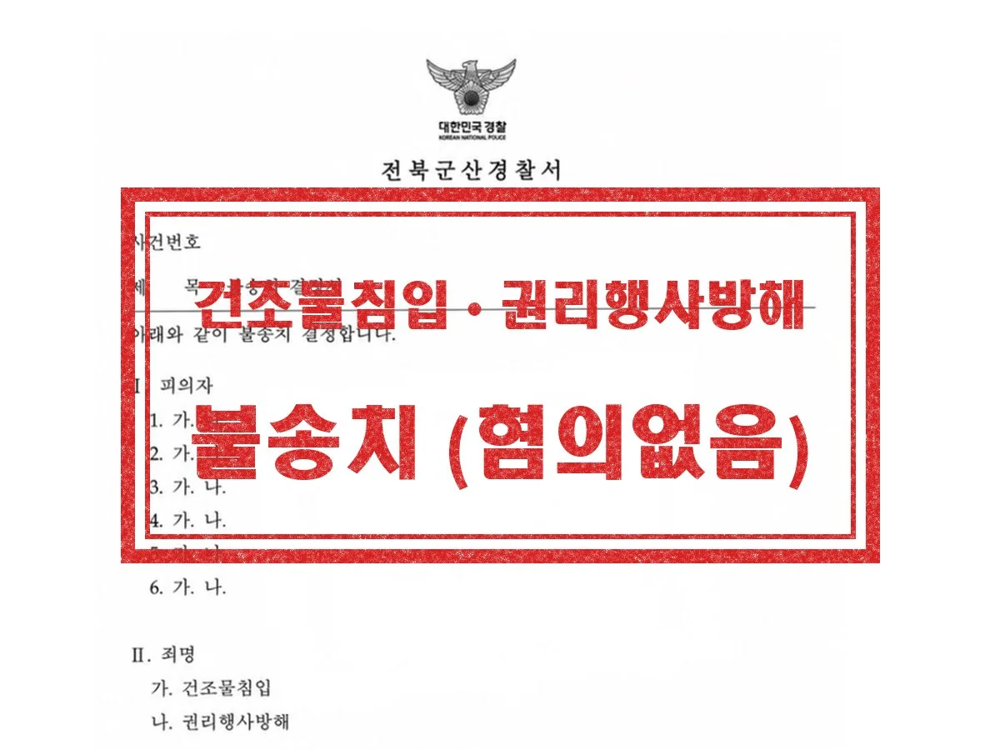
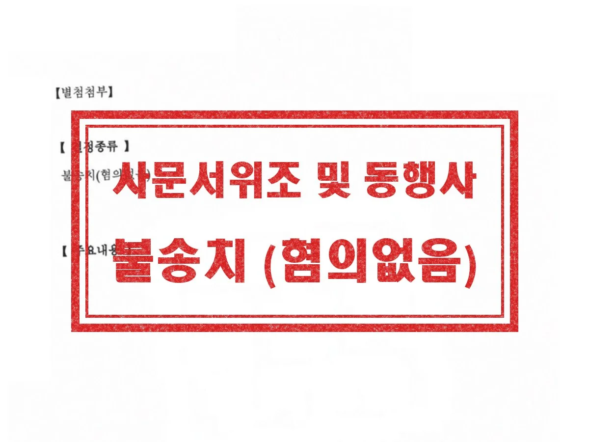

형사 · 군형사
건조물침입 · 권리행사방해
기업 간 사업장 인수 과정에서 발생한 사안으로, 고소인이 실질적 점유를 하고 있지 않았던 점과 건조물침입 또는 권리행사방해의 고의가 없었던 점을 적극 변소했습니다.
결과 경찰 불송치
Criminal Defense
군산 형사사건, 첫 조사 전에 상담하세요
Overview
군산에서 형사변호사, 형사전문변호사를 찾고 계신다면 먼저 사건이 어느 단계에 있는지부터 확인해야 합니다. 경찰에서 출석 요구를 받았거나, 고소를 당했거나, 반대로 피해를 입어 고소를 준비하고 있다면 지금이 상담할 때입니다. 수사 단계의 진술은 재판까지 그대로 이어지므로, 첫 조사를 받기 전에 방향을 정하는 것이 중요합니다.
경찰 출석요구를 받은 경우
조사 일정 조율, 고소장 내용 확인, 진술 방향 정리 후 조사 동행
구속될까 걱정되는 경우
영장실질심사 대응, 구속적부심, 보석 청구와 신원보증 자료 준비
피해를 입어 고소하려는 경우
고소장 작성, 증거 정리, 불송치 결정 시 이의신청
재판을 앞두고 있는 경우
증인신문, 양형자료 정리, 합의 진행, 항소심 대응
군 복무 중 사건이 생긴 경우
군사경찰·군검찰 조사 대응, 징계와 인사상 불이익 함께 검토
자녀가 소년 사건에 연루된 경우
소년부 송치 대응, 보호처분 심리, 환경조사 자료 준비
Process
01
출석 요구 내용, 고소장(정보공개청구), 메시지 등 자료를 확인합니다.
02
인정할 부분과 다툴 부분, 제출할 증거를 미리 정합니다.
03
경찰 조사에 함께 출석해 조서 내용을 확인하고, 송치 후 공소청 의견청취(사실관계 확인)에도 변호인으로 참여합니다.
04
의견서 제출, 합의, 공판 변론까지 이어서 맡습니다.
Results

기업 간 사업장 인수 과정에서 발생한 사안으로, 고소인이 실질적 점유를 하고 있지 않았던 점과 건조물침입 또는 권리행사방해의 고의가 없었던 점을 적극 변소했습니다.
결과 경찰 불송치

평소 알고 지내던 고소인과 사이가 틀어져 다른 지인에게 울분을 토한 것을, 고소인이 허위사실 유포로 고소한 사안입니다. 해당 발언이 사실의 적시가 아닌 단순 의견표명에 불과한 점, 허위 사실이 아니라는 점을 적극 변소했습니다.
결과 경찰 불송치

동업 과정에서 고소인과 불화가 생긴 뒤, 그 과정에서 작성한 업무 관련 문서를 두고 고소인이 사문서위조 및 동행사죄로 고소한 사안입니다. 해당 문서에 고소인이 직접 날인한 것이 분명함을 적극 입증해 변소했습니다.
결과 경찰 불송치
Columns
성립 요건과 처벌, 나이별 절차 차이, 학폭 절차 병행, 대화 내역 보존과 부모가 피해야 할 행동까지.
1호~10호 처분별 내용·기간·연령 요건, 병합 처분, 불처분 결정, 7일 이내 항고까지.
검사가 실시되는 사건, 결과의 한계, 먼저 요청해도 되는 경우와 아닌 경우까지.
불법영득의사의 의미, 자금 용도별 소명 방법, 금액에 따른 가중처벌과 군산 절차까지.
FAQ
분야를 정해서 연락 주실 필요 없습니다. 무슨 일이 있었는지만 말씀해 주시면 어떤 절차로 가는 사건인지 정리해 드립니다.